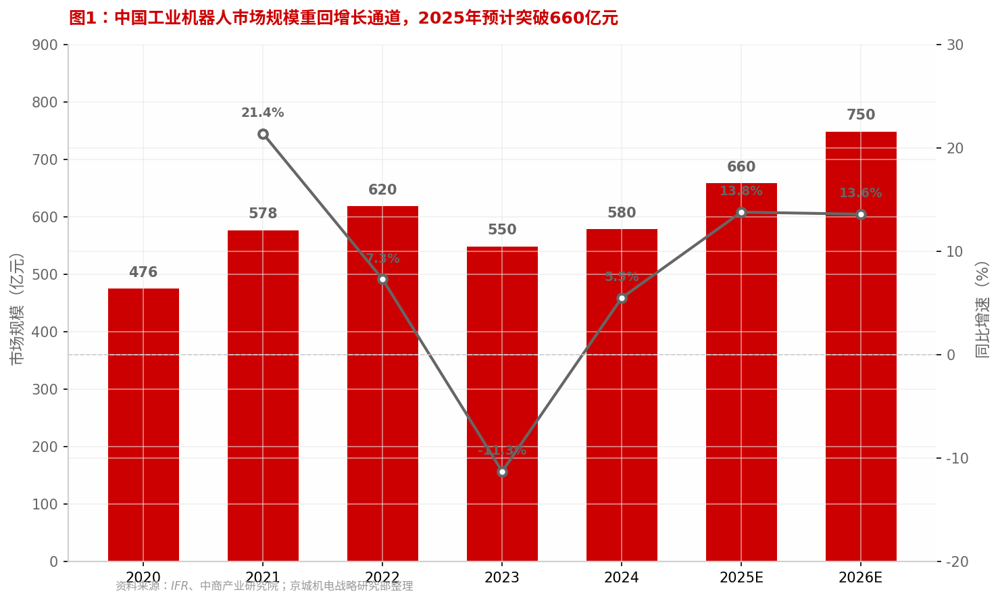
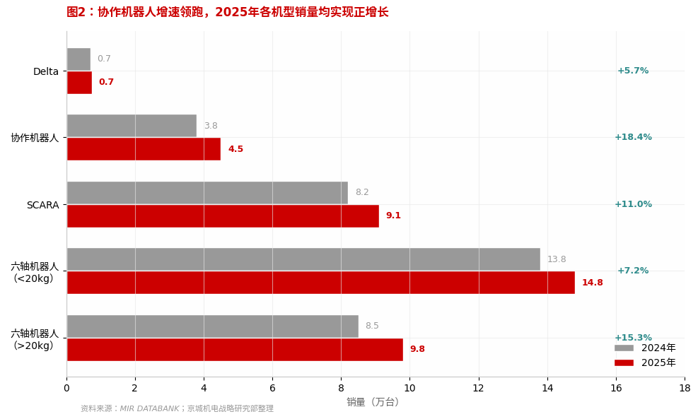
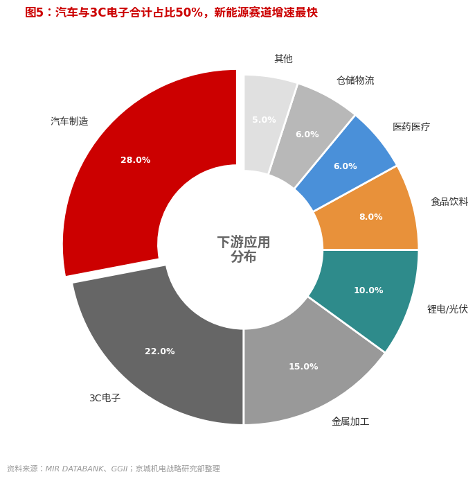
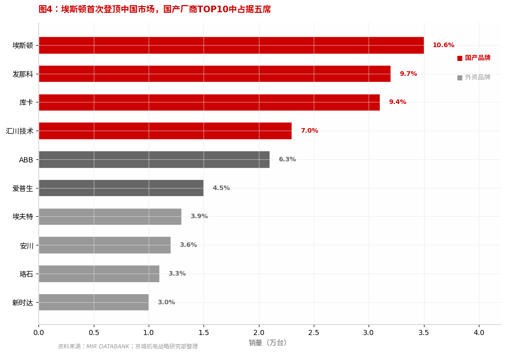
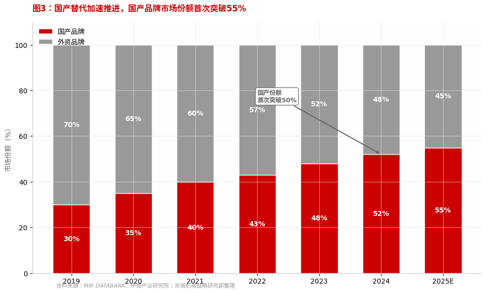
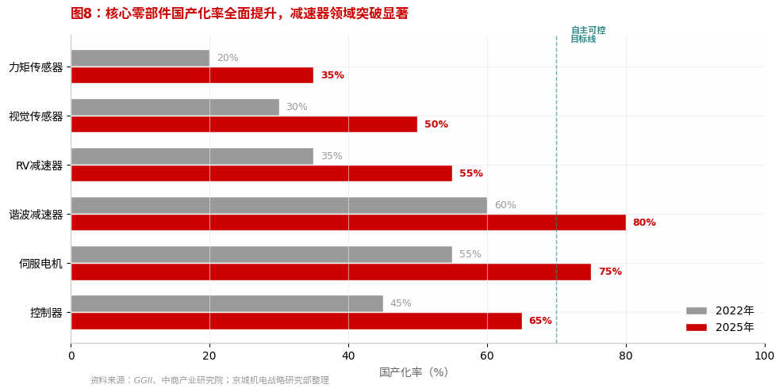
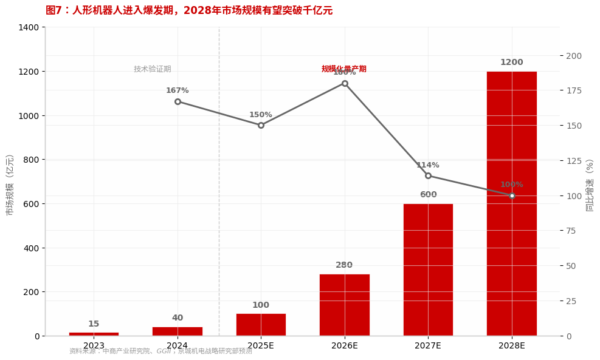
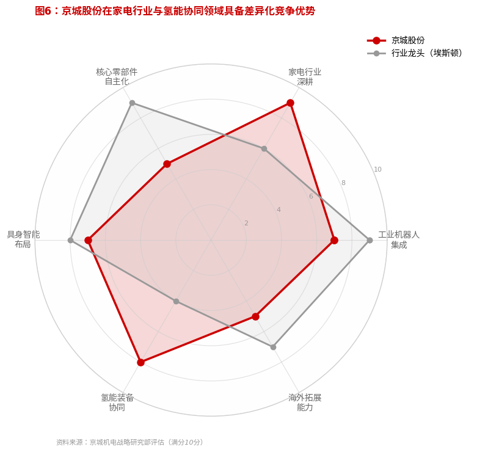
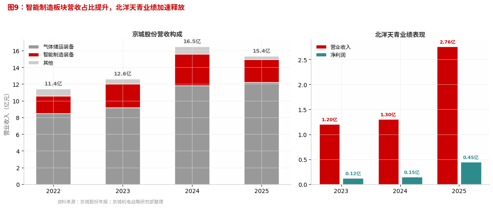

中国工业机器人市场在2023年经历-11.3%的深度调整后，2024年起企稳回升。2025年在新能源汽车扩产、3C电子复苏的双重驱动下，市场重回增长通道。据《2026年中国工业机器人行业市场白皮书》数据，2025年全行业销量约为33.2万台，同比增长超13%，市场规模预计达660亿元，同比增长13.8%。从全球视角看，中国市场占全球份额的45%，连续12年保持全球最大工业机器人市场地位。
以北京京城机电视角深度解析中国工业机器人市场格局、国产替代进程与具身智能新机遇
基于《2026年中国工业机器人行业市场白皮书》数据与公开资料研究整理
2025年，中国工业机器人市场在经历了两年的深度调整后迎来关键转折点。全年销量突破33万台，同比增长超13%，市场规模预计达660亿元。国产替代进程加速推进，国产品牌市场份额首次突破55%，埃斯顿历史性登顶中国市场销量第一。与此同时，人形机器人从"技术验证"迈向"规模化量产"，2025年被定义为具身智能元年。本报告以北京京城机电控股视角，系统分析行业市场格局、竞争态势、产业链趋势及战略机遇。
2025年销量同比增长超13%，Q4单季度超9.1万台。汽车制造业（尤其新能源汽车）和3C电子是核心增长引擎，协作机器人以18.4%增速领跑各品类。预计2026年销量突破36万台。
国产品牌市占率从2019年30%提升至2025年55%，埃斯顿以10.6%首次超越发那科登顶。汇川技术伺服系统市占率达28.3%，位居全球第一。
谐波减速器国产化率达80%、伺服电机75%、控制器65%。2025年中国工业机器人出口增长48.7%，首次超过进口，成为净出口国。
人形机器人"量产元年"，优必选、宇树等厂商合计出货量突破万台。市场规模预计从2025年100亿元增长至2028年1200亿元。京城机电通过创新中心持股28.57%深度布局。
京城股份2024年以2.46亿元收购北洋天青80%股权切入机器人产业。北洋天青在家电行业智能化总装线领域积累深厚，2025年营收2.76亿元，净利润4518万元。结合控股股东旗下配天机器人、京城智通等资产，有望形成"研发-制造-应用"完整产业链。
中国工业机器人市场在2023年经历-11.3%的深度调整后，2024年起企稳回升。2025年在新能源汽车扩产、3C电子复苏的双重驱动下，市场重回增长通道。据《2026年中国工业机器人行业市场白皮书》数据，2025年全行业销量约为33.2万台，同比增长超13%，市场规模预计达660亿元，同比增长13.8%。从全球视角看，中国市场占全球份额的45%，连续12年保持全球最大工业机器人市场地位。

值得注意的是，中国工业机器人产量从2015年的3.3万套增长至2024年的55.6万套，全球第一大生产国的地位进一步巩固。2025年Q4单季度销量超9.1万台，环比增长16%，显示下游需求回暖势头强劲。预计2026年市场规模将突破750亿元，销量达到36万台以上。
从产品类型看，2025年市场呈现"总量平稳、结构分化"的特征。六轴机器人仍为主导，销量约22.3万台，受汽车及电子行业拉动小幅上升。其中，大负载六轴机器人因新能源汽车、航空航天等领域需求强劲，成为未来增长主力。协作机器人表现亮眼，销量达4.5万台，实现双位数增长，主要得益于技术迭代、力控与视觉融合以及政策推动。


2025年，工业机器人应用仍以搬运与焊接为主，合计占比超60%。汽车制造业为最大下游市场（28%），尤其是新能源汽车对点焊、铆接、涂胶等工艺的自动化需求强劲。3C电子（22%）受益于果链复苏和手机需求增长，成为第二大应用领域。
协作机器人正加速从实验室走向产线，在汽车零部件、半导体、物流仓储等领域实现规模化落地。其具备的力控感知、3D视觉、AI决策能力，使其在柔性制造、人机协同场景中优势凸显。
中国工业机器人市场竞争格局正在经历历史性重塑。国产品牌从"跟随者"转变为"引领者"，2025年内资厂商市场份额首次突破55%。埃斯顿以10.6%的市占率登顶中国市场，打破了外资品牌长达数十年的垄断。这一格局变化并非偶然——国产龙头通过核心零部件自主化、全产业链布局和大客户战略，在高端领域持续突破。


份额从30%提升至40%，以价格优势和本地化服务切入中低端市场。
份额突破50%临界点，技术实力提升，在搬运、码垛等场景替代加速。
高端突破阶段，在汽车焊装、半导体封装等领域直接挑战外资垄断。
外资品牌整体承压——ABB于2025年被软银收购，发那科创始人家族退出经营层，安川份额持续下滑，标志着工业机器人竞争进入"中国主导节奏"的时代。
工业机器人产业链自主化是决定产业竞争力的核心变量。2025年，谐波减速器国产化率达80%，伺服电机75%，控制器65%，产业链安全水平大幅提升。绿的谐波、汇川技术、中大力德等企业在核心部件领域实现突破，中国工业机器人出口增长48.7%，首次超过进口，成为净出口国。

产业链重构正在从"进口替代"向"全球供应"升级。埃斯顿、汇川等企业从整机出海延伸至核心部件出口，绿的谐波减速器已进入ABB、库卡等国际巨头的供应链。中国企业正在从产业链的参与者转变为规则制定者。
2025年被定义为人形机器人从"技术验证"迈向"规模化量产"的关键一年。优必选、银河通用、智元、宇树等厂商已实现小批量交付，产品广泛应用于工业、物流、特种作业等领域。技术层面，多模态感知、端到端学习、高动态运动控制等关键能力持续突破。

京城机电通过北京人形机器人创新中心（持股28.57%）深度布局具身智能赛道。创新中心研发的"天工"人形机器人已实现小批量交付，在工业制造、物流仓储等B端场景开展应用验证。2025年2月北京亦庄发布万台机器人应用计划，进一步加速了人形机器人的产业化进程。
从商业模式看，人形机器人企业正从"卖产品"向"卖服务"转型。优必选2025年机器人服务收入近14亿元，验证了商业化可行性。京城股份2024年收购的北洋天青也在积极探索具身智能在工业场景的应用集成。

家电行业深耕（9/10）：北洋天青在家电智能化总装线领域积累深厚，为海尔、格力等龙头提供产线集成服务，是国内家电行业智能制造的领先服务商。
氢能装备协同（8/10）：京城股份在氢能储运装备领域领先，四型瓶产业化加速，与机器人业务形成"氢能+智能制造"的独特协同。
具身智能布局（7/10）：通过创新中心持股28.57%深度布局，"天工"机器人已小批量交付。
工业机器人集成（7/10）：北洋天青在集成应用领域具备技术积累，但规模较龙头仍有差距。
核心零部件（5/10）：通过配天机器人等资产具备一定基础，自研率待提升。

北洋天青在家电智能化总装线领域已具备领先优势，应持续加大研发投入，将自动上压机、全自动套箱等核心技术迭代至行业顶尖水平。同时拓展厨电、小家电等细分场景，巩固"家电行业智能制造第一服务商"地位。
积极协调控股股东京城机电，推动配天机器人（本体制造）、京城智通（特种机器人）等优质资产注入上市公司，形成从核心零部件到整机制造再到系统集成的完整产业链。
依托北京人形机器人创新中心的技术积累，加快"天工"人形机器人的商业化落地。重点面向工业制造、物流仓储等B端场景，探索"机器人即服务"（RaaS）的商业模式，培育第二增长曲线。
充分发挥京城股份在氢能储运装备领域的领先优势，探索氢能装备智能制造与机器人技术的深度融合。在氢能产线自动化、氢燃料电池组装等细分场景打造差异化解决方案。
2025年中国工业机器人出口增长48.7%，已成为净出口国。应借助京城股份的国际化渠道优势，推动北洋天青的智能制造解决方案出海，重点布局东南亚、中东等新兴市场，在海外复制国内成功经验。预计到2028年，京城股份智能制造板块营收有望突破10亿元，占公司总营收比重提升至35%以上，成为公司核心增长引擎。